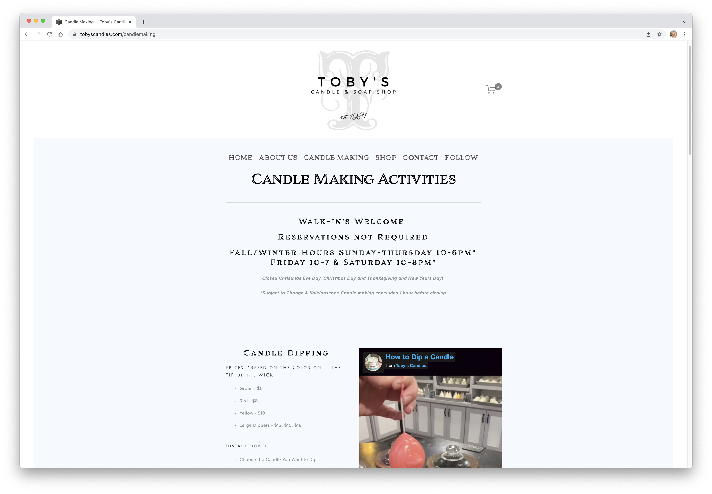
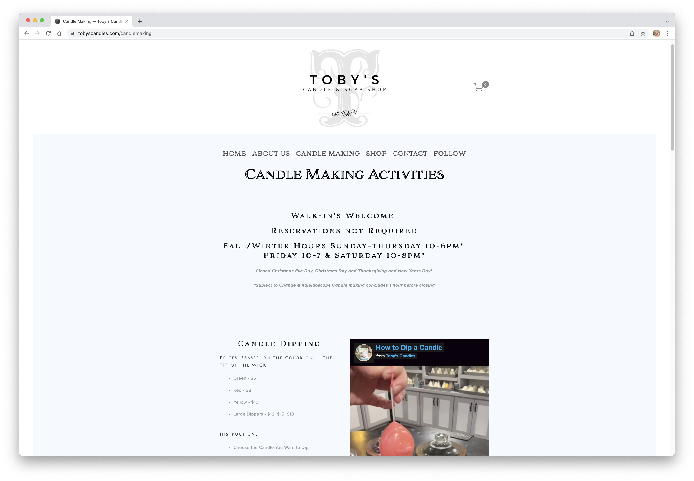
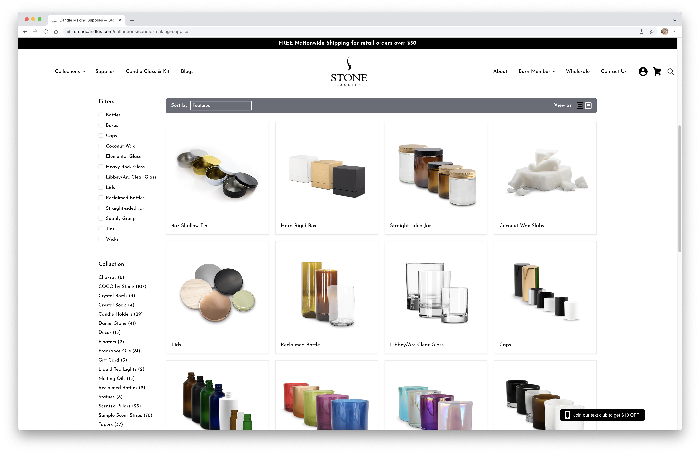
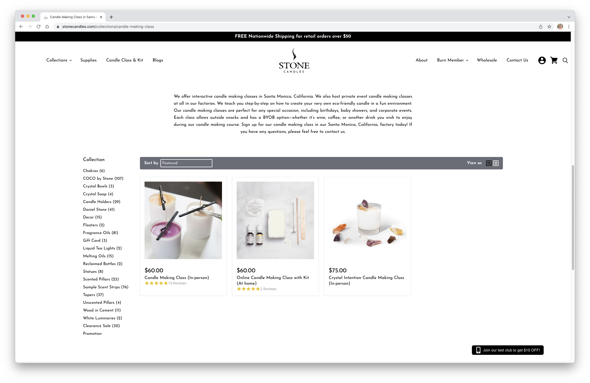
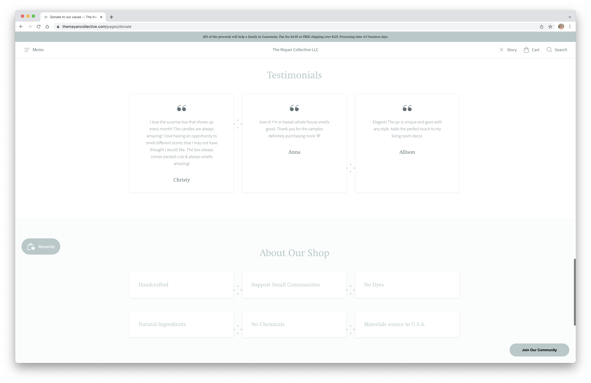
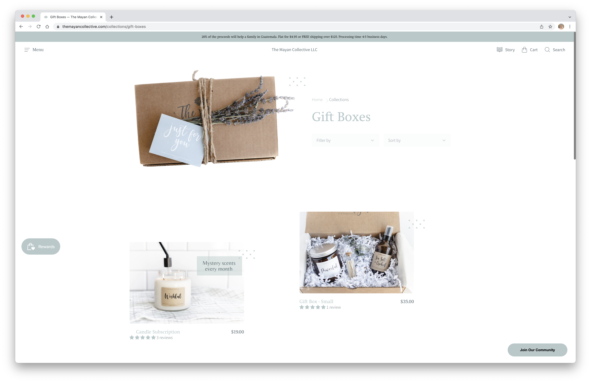

Final project proposal
Introduction
SLO Burn Candles
SLO Burn Candles is your one-stop shop for all things candles, whether that is checking out their beautiful pre-made and all natural/organic/sustainably packaged candles, stocking up on supplies to make your own, or having a candle-making party in the store.
Target audience
The people who use this site include candlemakers, crafters, candle connoisseurs, people looking to buy candles as gifts for loved ones or for themselves, people wanting to put on a candlemaking event in the store, and anyone else who may stumble across the store in Downtown SLO and want to learn more via the website.
Their primary tasks or goals will be to place a candle order for pick-up or delivery, schedule a candle-making party, find out store hours or location, learn more about what types of candles and candlemaking supplies we sell and what they are made of, and find the business's phone number and/or email to contact if they have any questions that the website couldn't answer on its own.
Comparative analysis
Toby's Candles
 

Stone Candles
 The Mayan Collective LLC
 Website content
Home
Welcome to SLO Burn Candles. Come on in!
[Owners and staff standing outside SLO Burn Candles storefront in Downtown SLO on a sunny day with arms around each other laughing.]
We are located at 123 Higuera St. San Luis Obispo, CA 93405
Hours: 11am-6pm daily
About
When Kathy was a University of San Francisco professor in 1981, one of her students was skilled in the beautiful art of candle carving, an art which she desired to acquire. Slow Burn Candles started selling candles seasonally and within one year turned into a full time business. Kathy even taught her daughter how to dip and carve candles. Numerous malls in Central California became the venue for Kathy’s candle carving demonstrations. For many years the candle factory at Knott’s Berry Farm was operated by Kathy and her family. Kathy's daughter, Annika, now runs the family business and upon moving to the Central Coast in November 2019 with her Austrailian Sheppard, Bo, Downtown San Luis Obispo became the location of what is now known as “SLO Burn Candles”.
[Headshot of Kathy taken in San Francisco in May 1981.]
Candles
Herbal, $18.00
[Herbal candle resting on table unlit in SLO Burn Candles shop.]
Crystal, $24.00
[Crystal candle resting on table unlit in SLO Burn Candles shop.]
Decorative, $28.00
[Decorative candle resting on table unlit in SLO Burn Candles shop.]
Sticks, $6.00
[Candlesticks of various colors resting on table in candleholders unlit in SLO Burn Candles shop.]
Tealight Candles $3.00
[Tealight candles of various colors resting on table unlit in SLO Burn Candles shop.]
Custom, $18.00-$32.00
[Custom candle resting on table unlit in SLO Burn Candles shop.]
Supplies
Beeswax, $12.00/lb
[One pound of beeswax in a pile resting on table in SLO Burn Candles shop.]
Wooden Wicks, $0.50 each
[Ten wooden wicks in a pile resting on table in SLO Burn Candles shop.]
Essential Oils, $12.00/bottle
[Eight scents of essential oil bottles resting on table in SLO Burn Candles shop.]
Dyes, $9.00/bottle
[Seven colors of dye bottles resting on table in SLO Burn Candles shop.]
Herbs (Grown In Store), $8.00/lb
[All different herbs in a pile resting on table in SLO Burn Candles shop.]
Events
We offer interactive candlemaking classes both at our store in Downtown San Luis Obispo as well as in virtual formats. We teach you step-by-step on how to create your very own eco-friendly candle in a fun environment. Our candle making classes are perfect for any special occasion, including birthdays, baby showers, and corporate events. Each class allows outside snacks and has a BYOB option—whether it’s wine, coffee, or another drink you wish to enjoy during our candlemaking course. Sign up for a candlemaking class today! If you have any questions about classes or pricing depending on the size of your party, please feel free to contact us.
[A group of young women inside the SLO Burn Candles store in Downtown SLO sitting at a table candlemaking in deep focus.]
Contact
We'd love to hear from you!
Please take a few minutes to fill out our contact form.
[Annika's Austrailian Sheppard, Bo, sitting outside the SLO Burn Candles store in Downtown SLO on a sunny day.]
Sustainability
Caring for our environment and our customers is our top priority at SLO Burn Candles. All of our candles and materials are sourced locally and then produced in San Luis Obispo at our shop. We even grow our own herbs on our outdoor patio at the shop! You can catch our candlemakers in our shop 7 days a week making beautiful candles and molds. We use all natural beeswax and organic fragrances and dyes so no toxins are released into the atmosphere, and also preventing our customers from breathing in harmful substances. We also use fully recycled containers for our candles either provided by our customers or local antique and thrift stores. Our Give Back program allows for our customers to receive a 35% discount on their candle purchases when they bring in their own glass container. Plus, customers can recycle the glass when all the wax is gone to use as a cup or make another candle in.
[Customer holding a lit SLO Burn Candle in the store with both hands and smelling the scent with eyes closed and slight smile on face.]